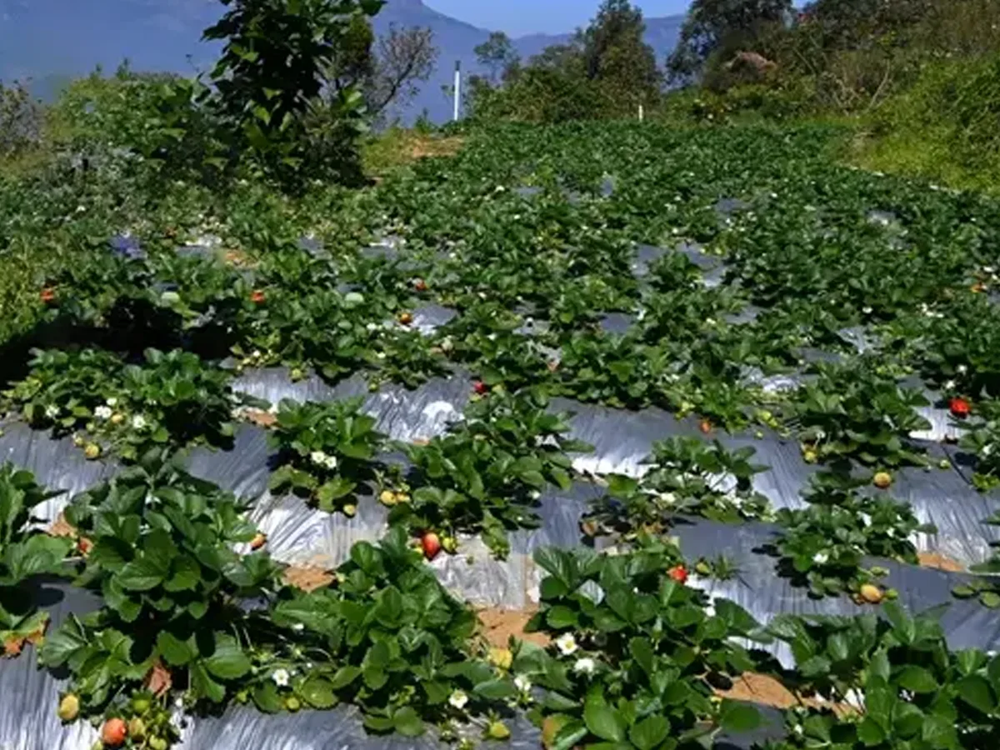

Seasonal agriculture
Farm & orchard visits
Ask about responsible access to working farms, strawberries, vegetables and cool-climate fruit when available.

Farms · Views · Local routes
Discover seasonal farms, highland viewpoints, local jeep routes, waterfalls and heritage landscapes—with access and availability checked before travel.
What to experience
The best choice depends on season, weather, permissions and your group's comfort.
Seasonal agriculture
Ask about responsible access to working farms, strawberries, vegetables and cool-climate fruit when available.
Off-road sightseeing
Enquire about current routes, pickup, duration, road conditions and vehicle suitability.
Local planning
Plan a realistic route through viewpoints, waterfalls, village landscapes and nearby heritage.
Water & landscape
Consider Kanthalloor Waterfalls, Irachilpara and Pattisseri Dam according to current access.
Mountain scenery
Explore cultivated valleys and changing mist from suitable highland roads and viewpoints.
Regional heritage
Add dolmens, sandalwood landscapes and jaggery traditions in neighbouring Marayoor.
Travel responsibly
These are living farms, natural areas and local roads—not staged attractions. Permission, crop availability, forest rules and weather can affect what is possible on the day.

Local arrangements
Tell us what interests you and we will check current options.